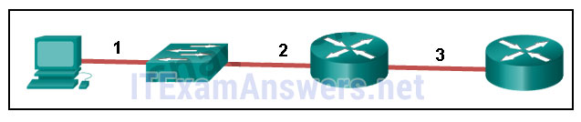
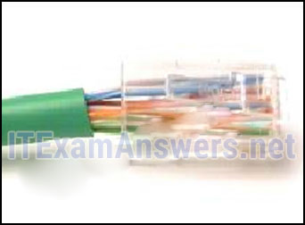
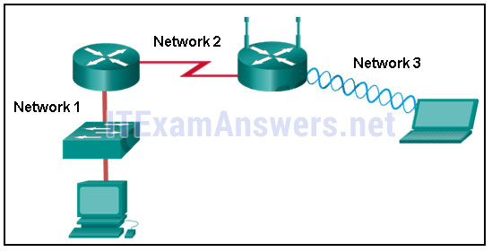
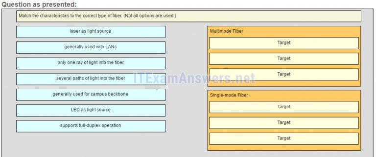
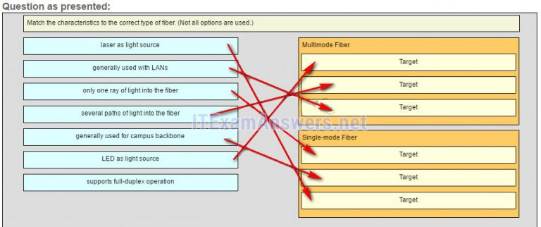

1.¿Cuáles son dos razones para que los protocolos de capa física utilicen técnicas de codificación de cuadros? (Escoge dos.)
- Para reducir el número de colisiones en los medios.
- para distinguir los bits de datos de los bits de control *
- para identificar donde comienza y termina el marco *
- para aumentar el rendimiento de los medios
- @javi__super
Explicación:
una técnica de codificación convierte un flujo de bits de datos en un código predefinido que tanto el transmisor como el receptor pueden reconocer. El uso de patrones predefinidos ayuda a diferenciar los bits de datos de los bits de control y proporciona una mejor detección de errores de medios.
2.¿Qué se indica con el término rendimiento?
- La tasa de transferencia de datos garantizada ofrecida por un ISP.
- la medida de los bits transferidos a través de los medios en un período de tiempo determinado *
- La capacidad de un medio particular para transportar datos.
- La medida de los datos utilizables transferidos a través de los medios.
- @javi__super
Explique:
El
rendimiento es la medida de la transferencia de bits a través de los medios durante un período de tiempo determinado. El rendimiento se ve afectado por una serie de factores, como EMI y latencia, por lo que rara vez coincide con el ancho de banda especificado para un medio de red. La medición de rendimiento incluye bits de datos de usuario y otros bits de datos, como sobrecarga, acuse de recibo y encapsulación. La medida de los datos utilizables transferidos a través de los medios se llama Goodput.
3.Un administrador de red nota que algunos cables Ethernet recién instalados llevan señales de datos corruptas y distorsionadas. El nuevo cableado se instaló en el techo cerca de luces fluorescentes y equipos eléctricos. ¿Qué dos factores pueden interferir con el cableado de cobre y provocar la distorsión de la señal y la corrupción de los datos? (Escoge dos.)
- RFI *
- EMI *
- diafonia
- atenuación de la señal
- @javi__super
Explique:
las
señales EMI y RFI pueden distorsionar y corromper las señales de datos que son transportadas por medios de cobre. Estas distorsiones generalmente provienen de ondas de radio y dispositivos electromagnéticos como motores y luces fluorescentes. La interferencia es una perturbación causada por cables adyacentes demasiado unidos entre sí, con el campo magnético de un cable que afecta a otro. La atenuación de la señal se produce cuando una señal eléctrica comienza a deteriorarse a lo largo de un cable de cobre.
4.¿Qué característica describe la diafonía?
- La distorsión de la señal de red de la iluminación fluorescente.
- la distorsión de los mensajes transmitidos de señales transportadas en cables adyacentes *
- El debilitamiento de la señal de la red a través de largos cables.
- La pérdida de la señal inalámbrica a una distancia excesiva del punto de acceso.
- @javi__super
Explique:
EMI y RFI pueden distorsionar las señales de la red debido a la interferencia de luces fluorescentes o motores eléctricos. La atenuación provoca el deterioro de la señal de la red a medida que se desplaza por el cableado de cobre. Los dispositivos inalámbricos pueden experimentar la pérdida de señales debido a distancias excesivas desde un punto de acceso, pero esto no es interferencia. La interferencia es la perturbación causada por los campos eléctricos o magnéticos de la señal transportada en un cable adyacente dentro del mismo cable.
5.¿Qué técnica se usa con el cable UTP para ayudar a proteger contra la interferencia de la señal de interferencia?
- envolviendo un escudo de aluminio alrededor de los pares de cables
- retorciendo los cables en pares *
- Encerrar los cables dentro de una funda de plástico flexible
- Terminando el cable con conectores especiales a tierra.
- @javi__super
Explique:
Para ayudar a prevenir los efectos de las interferencias, los cables de los cables UTP se trenzan en pares. Al retorcer los cables, los campos magnéticos de cada cable se anulan entre sí.
6.Consulte la presentación. La PC está conectada al puerto de la consola del switch. Todas las demás conexiones se realizan a través de enlaces FastEthernet. ¿Qué tipos de cables UTP se pueden utilizar para conectar los dispositivos?

- 1 - rollover, 2 - cruce, 3 - recto
- 1 - rollover, 2 - recto, 3 - cruce *
- 1 - cruce, 2 - recto, 3 - rollover
- 1 - cruce, 2 - rollover, 3 - recto
- @javi__super
Explique:
un cable directo se usa comúnmente para interconectar un host a un conmutador y un conmutador a un enrutador. Un cable cruzado se usa para interconectar dispositivos similares, como un interruptor a un conmutador, un host a un host o un enrutador a un enrutador. Si un conmutador tiene la capacidad de MDIX, se podría usar un cruce para conectar el conmutador al enrutador; Sin embargo, esa opción no está disponible. Se utiliza un cable de reinversión para conectarse a un enrutador o puerto de consola de conmutador.
7.Consulte la presentación. ¿Qué está mal con la terminación mostrada?

- La trenza de cobre tejida no debería haber sido removida.
- La longitud sin torsión de cada cable es demasiado larga. *
- Los cables son demasiado gruesos para el conector que se utiliza.
- Se está utilizando el tipo incorrecto de conector.
- @javi__super
Explique:
cuando se termina un cable a un conector RJ-45, es importante asegurarse de que los cables no retorcidos no sean demasiado largos y que la funda de plástico flexible que rodea los cables esté arrugada y no los cables pelados. Ninguno de los cables de color debe ser visible desde la parte inferior del conector.
8.¿Qué tipo de conector utiliza una tarjeta de interfaz de red?
- ESTRUENDO
- RJ-45 *
- PS-2
- RJ-11
- @javi__super
9.¿Cuál es una ventaja de usar cables de fibra óptica en lugar de cables de cobre?
- Por lo general, es más barato que el cableado de cobre.
- Es capaz de transportar señales mucho más lejos que el cableado de cobre. *
- Se puede instalar alrededor de curvas cerradas.
- Ca
- @javi__super
Explique:
el
cableado de cobre suele ser más barato y más fácil de instalar que el cableado de fibra óptica. Sin embargo, los cables de fibra generalmente tienen un rango de señalización mucho mayor que el del cobre.
10.¿Por qué se usan dos hebras de fibra para una sola conexión de fibra óptica?
- Las dos cadenas permiten que los datos viajen distancias más largas sin degradarse.
- Permiten la conectividad full-duplex. *
- Evitan que las interferencias causen interferencias en la conexión.
- Aumentan la velocidad a la que pueden viajar los datos.
- @javi__super
Explique:
la
luz solo puede viajar en una dirección por una sola hebra de fibra. Para permitir la comunicación full-duplex, se deben conectar dos hebras de fibra entre cada dispositivo.
11.Un administrador de red está diseñando el diseño de una nueva red inalámbrica. ¿Cuáles son las tres áreas de preocupación que se deben tener en cuenta al crear una red inalámbrica? (Elige tres.)
- seguridad *
- interferencia *
- área de cobertura *
- cableado extenso
- @javi__super
Explique:
Las tres áreas de preocupación para las redes inalámbricas se centran en el tamaño del área de cobertura, cualquier interferencia cercana y la seguridad de la red. El cableado extensivo no es una preocupación para las redes inalámbricas, ya que una red inalámbrica requerirá un cableado mínimo para proporcionar acceso inalámbrico a los hosts. Las opciones de movilidad no son un componente de las áreas de preocupación para las redes inalámbricas.
12.¿Qué capa del modelo OSI es responsable de especificar el método de encapsulación utilizado para tipos específicos de medios?
- solicitud
- enlace de datos *
- transporte
- físico
- @javi__super
Explique:
la
encapsulación es una función de la capa de enlace de datos. Diferentes tipos de medios requieren diferentes encapsulaciones de capa de enlace de datos.
13.¿Cuáles son los dos servicios realizados por la capa de enlace de datos del modelo OSI? (Escoge dos.)
- Encripta los paquetes de datos.
- Acepta paquetes de Capa 3 y los encapsula en marcos. *
- Determina la ruta para reenviar paquetes.
- Proporciona control de acceso a los medios y realiza la detección de errores. *
- @javi__super
Explique:
la capa de enlace de datos es responsable del intercambio de tramas entre nodos a través de un medio de red físico. Específicamente, la capa de enlace de datos realiza dos servicios básicos:
acepta paquetes de Capa 3 y los encapsula en marcos.
Proporciona control de acceso a los medios y realiza la detección de errores.
La determinación de ruta es un servicio provisto en la Capa 3. Un conmutador de Capa 2 construye una tabla de direcciones MAC como parte de su operación, pero la determinación de la ruta no es el servicio que proporciona la capa de enlace de datos.
14.¿Qué es verdad con respecto a las topologías físicas y lógicas?
- La topología lógica es siempre la misma que la topología física.
- Las topologías lógicas se refieren a cómo una red transfiere datos entre dispositivos. *
- Las topologías físicas muestran el esquema de direccionamiento IP de cada red.
- Las topologías físicas se ocupan de cómo una red transfiere marcos.
- @javi__super
Explique:
Las topologías físicas muestran la interconexión física de dispositivos. Las topologías lógicas muestran la forma en que la red transferirá los datos entre los nodos conectados.
15.¿Qué método de transferencia de datos permite enviar y recibir información al mismo tiempo?
- medio duplex
- duplex completo *
- multicine
- simplex
- @javi__super
16.¿Qué enunciado describe una topología en estrella extendida?
- Cada sistema final está conectado a su respectivo vecino a través de un dispositivo intermedio.
- Cada sistema final está conectado a su respectivo vecino a través de un dispositivo intermedio. *
- Los dispositivos finales se conectan a un dispositivo central intermedio, que a su vez se conecta a otros dispositivos centrales intermedios. *
- Los dispositivos finales están conectados entre sí por un bus y cada bus se conecta a un dispositivo central intermedio.
- @javi__super
Explique:
en una topología en estrella extendida, los dispositivos intermedios centrales interconectan otras topologías en estrella.
17.Consulte la presentación. ¿Qué declaración describe los métodos de control de acceso a los medios que utilizan las redes en la exhibición?

- Las tres redes utilizan CSMA / CA
- La red 1 usa CSMA / CD y la red 3 usa CSMA / CA. *
- La red 1 usa CSMA / CA y la red 2 usa CSMA / CD.
- La red 2 usa CSMA / CA y la red 3 usa CSMA / CD.
- @javi__super
Explique:
la
red 1 representa una LAN Ethernet. Los datos en la LAN alámbrica acceden al medio utilizando CSMA / CD. La red 2 representa una conexión WAN punto a punto, por lo que no se requiere ningún método de acceso a los medios. La red 3 representa una WLAN y los datos acceden a la red utilizando CSMA / CA.
18.¿Qué contiene el tráiler de un marco de enlace de datos?
- dirección lógica
- detección de errores *
- dirección física
- datos
- @javi__super
Explicación:
el tráiler en un marco de enlace de datos contiene información de detección de errores que es pertinente al marco incluido en el campo FCS. El encabezado contiene información de control, como el direccionamiento, mientras que el área indicada por la palabra "datos" incluye los datos, la PDU de la capa de transporte y el encabezado IP.
19.A medida que los datos viajan en el medio en una secuencia de 1s y 0s, ¿cómo un nodo receptor identifica el principio y el final de un marco?
- El nodo transmisor envía una baliza para notificar que se adjunta una trama de datos.
- El nodo transmisor inserta los bits de inicio y parada en la trama. *
- El nodo receptor identifica el comienzo de una trama al ver una dirección física.
- El nodo de transmisión envía una señal fuera de banda al receptor sobre el comienzo de la trama.
- @javi__super
Explicar:
cuando los datos viajan en el medio, se convierten en un flujo de 1s y 0s. El proceso de encuadre se inserta en los indicadores de inicio y parada del marco para que el destino pueda detectar el principio y el final del marco.
20.¿Cuál es el rol de la subcapa de control de enlace lógico?
- para proporcionar direccionamiento de capa de enlace de datos
- para marcar cuadros para identificar el protocolo de capa de red que se está llevando a cabo *
- Definir los procesos de acceso a medios realizados por hardware de red.
- para proporcionar acceso a varias tecnologías de red de Capa 1
- @javi__super
Explique:
hay dos subcapas de enlace de datos, MAC y LLC. La subcapa LLC es responsable de la comunicación con la capa de red y de etiquetar los marcos para identificar qué protocolo de Capa 3 está encapsulado.
21.¿Cuál es la definición de ancho de banda?
- la medida de los datos utilizables transferidos durante un período de tiempo determinado
- la cantidad de datos que pueden fluir de un lugar a otro en un tiempo determinado *
- La velocidad a la que los bits viajan en la red.
- La velocidad a la que los bits viajan en la red.
- @javi__super
Explique:
el ancho de banda es la medida de la capacidad de un medio de red para transportar datos. Es la cantidad de datos que puede moverse entre dos puntos en la red durante un período específico de tiempo, generalmente un segundo.
22.¿Cuál es la función del valor CRC que se encuentra en el campo FCS de un marco?
- Para verificar la dirección física en el marco.
- para verificar la integridad de la trama recibida *
- para verificar la dirección lógica en el marco
- para calcular el encabezado de suma de comprobación para el campo de datos en el marco
- @javi__super
Explicación:
el valor CRC en el campo FCS de la trama recibida se compara con el valor CRC calculado de esa trama, para verificar la integridad de la trama. Si los dos valores no coinciden, entonces el marco se descarta.
23.Rellena el espacio en blanco.
- El término ancho de banda indica la capacidad de un medio para transportar datos y generalmente se mide en kilobits por segundo (kb / s) o megabits por segundo (Mb / s).
- @javi__super
Explique:
el
ancho de banda es la capacidad de un medio para transportar datos en un período de tiempo determinado. Normalmente se mide en kilobits por segundo (kb / s) o megabits por segundo (Mb / s).
24.Rellena el espacio en blanco.
- ¿Qué acrónimo se usa para hacer referencia a la subcapa de enlace de datos que identifica el protocolo de capa de red encapsulado en el marco? LLC
- @javi__super
Explique:
Logical Link Control (LLC) es la subcapa de enlace de datos que define los procesos de software que proporcionan servicios a los protocolos de capa de red. La LLC coloca información en el marco y esa información identifica el protocolo de capa de red que se encapsula en el marco.
25.Relaciona las características con el tipo correcto de fibra. (No se utilizan todas las opciones).
- Pregunta

- Respuesta

- @javi__super
Explique:
la
fibra monomodo utiliza un láser como fuente de luz. Su núcleo pequeño produce un solo camino recto para la luz y se usa comúnmente con la columna vertebral del campus. La fibra multimodo utiliza LED como fuente de luz. Su núcleo más grande permite múltiples caminos para la luz. Se usa comúnmente con las LAN.
26.Rellena el espacio en blanco.
- Una topología física que es una variación o combinación de una topología de punto a punto, eje y radio, o malla, se conoce comúnmente como una topología híbrida .
- @javi__super
Explicar:
una topología híbrida es una variación o combinación de una topología de punto a punto, eje y radio, o malla. Esto puede incluir una malla parcial o una topología en estrella extendida.
27.¿Cuáles son dos ejemplos de topologías híbridas? (Escoge dos.)
- estrella extendida *
- malla parcial *
- hub y habló
- malla completa
- @javi__super
Explicar:
una topología híbrida es una variación o una combinación de otras topologías. Tanto la malla parcial como la estrella extendida son ejemplos de topologías híbridas.
28.¿Qué enunciado describe la señalización en la capa física?
- En la señalización, un 1 siempre representa el voltaje y un 0 siempre representa la ausencia de voltaje.
- Enviar las señales de forma asíncrona significa que se transmiten sin una señal de reloj. *
- La codificación inalámbrica incluye el envío de una serie de clics para delimitar los marcos.
- La señalización es un método para convertir un flujo de datos en un código predefinido
- @javi__super